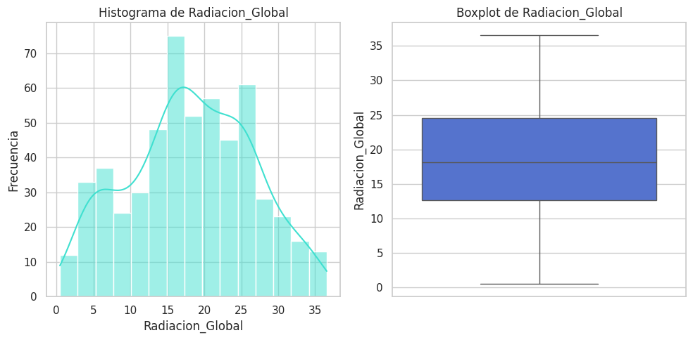
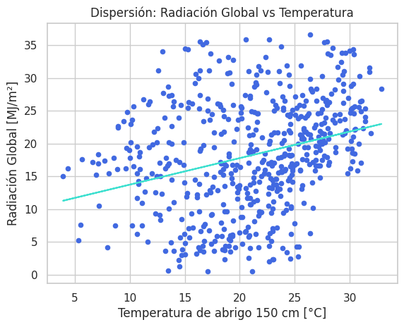
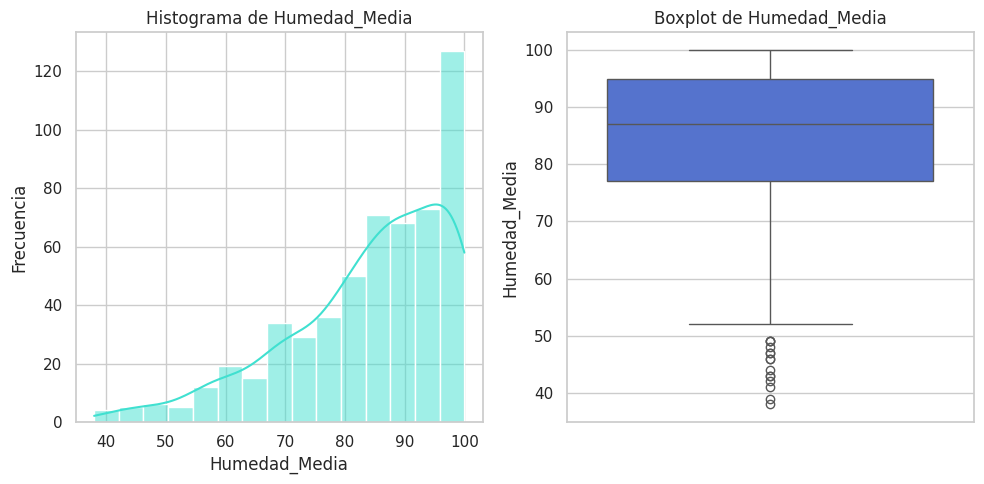
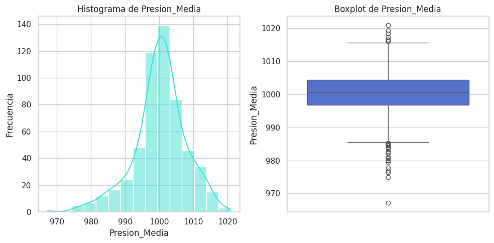
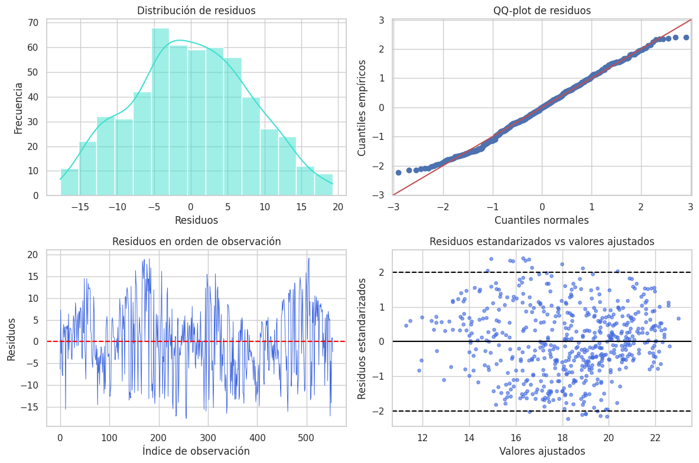
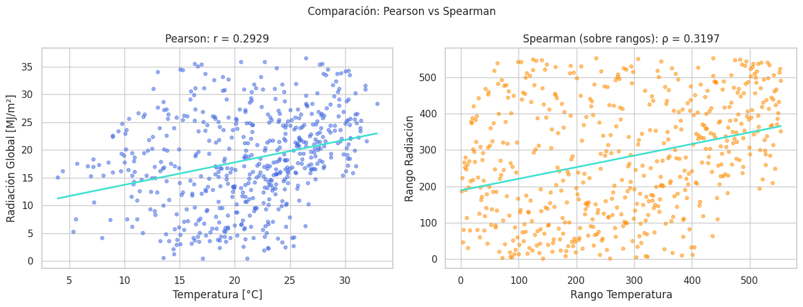

Resumen ejecutivo
Este proyecto analiza datos meteorológicos diarios de Corrientes, Mercedes, con foco en comprender qué variables ayudan a explicar la radiación solar global.
El análisis permite transformar datos de temperatura, humedad, presión y radiación en criterios prácticos para decisiones vinculadas con energía solar, ambiente, infraestructura y planificación operativa.
Estadística aplicada Meteorología Data analytics Regresión lineal Python IngenieríaAccesos rápidos
Parámetros clave Distribución de radiación Temperatura vs radiación Humedad Presión atmosférica Diagnóstico del modelo Pearson vs Spearman Conclusiones prácticasParámetros clave del estudio
Registros diarios
Base de datos meteorológica diaria para analizar comportamiento climático entre 2023 y 2024.
Radiación media
Radiación solar global promedio aproximada, medida en MJ/m².
Modelo simple
La temperatura tiene relación positiva con la radiación, pero por sí sola explica poco del fenómeno.
Modelo múltiple
Al sumar humedad y presión atmosférica, la capacidad explicativa mejora de forma importante.
Gráfico 1 · Distribución de radiación solar global
Permite observar la variabilidad de la radiación diaria. Es útil para evaluar disponibilidad solar, dispersión de valores y comportamiento general del recurso.

Gráfico 2 · Temperatura vs radiación
Muestra una relación positiva entre temperatura y radiación solar. Sin embargo, la dispersión de puntos evidencia que la temperatura no alcanza como único predictor.

Gráfico 3 · Distribución de humedad media
La humedad es una variable crítica porque se asocia con nubosidad y menor disponibilidad solar. En el modelo múltiple, su efecto sobre la radiación es negativo.

Gráfico 4 · Distribución de presión atmosférica
La presión aporta contexto meteorológico. Valores más estables o elevados pueden relacionarse con condiciones más despejadas, mejorando la interpretación del modelo.

Gráfico 5 · Diagnóstico del modelo estadístico
El diagnóstico de residuos permite revisar si el modelo es confiable. Se observa que el modelo simple es útil como aproximación inicial, pero presenta limitaciones propias de una serie meteorológica temporal.

Gráfico 6 · Comparación Pearson vs Spearman
Pearson y Spearman confirman una asociación positiva entre temperatura y radiación. La similitud entre ambos resultados refuerza que la relación observada no depende únicamente de supuestos paramétricos estrictos.

Conclusiones prácticas para toma de decisiones
No estimar radiación solo con temperatura
La temperatura sirve como señal inicial, pero el modelo simple explica poco. Para decisiones técnicas se necesitan más variables.
Incorporar humedad mejora el análisis
La humedad tiene efecto negativo sobre la radiación. Días más húmedos suelen implicar menor disponibilidad solar útil.
Usar presión como variable de contexto
La presión atmosférica ayuda a interpretar condiciones más estables o despejadas.
Separar por estación o mes
La radiación y la temperatura tienen comportamiento estacional. Analizar por mes o estación mejoraría la calidad de las decisiones.
Aplicación en energía solar
El análisis puede apoyar estudios preliminares de disponibilidad solar, planificación de operación y evaluación de condiciones ambientales.
Próximo paso técnico
Agregar nubosidad, viento, mes, estación del año y rezagos temporales permitiría construir modelos predictivos más precisos.
Valor profesional
Este caso muestra cómo convertir datos meteorológicos en información práctica. No se limita a calcular métricas: interpreta resultados y los traduce en criterios útiles para ingeniería, energía, ambiente y planificación.
El enfoque integra estadística aplicada, análisis de datos e interpretación técnica, fortaleciendo el perfil de data aplicada a ingeniería.